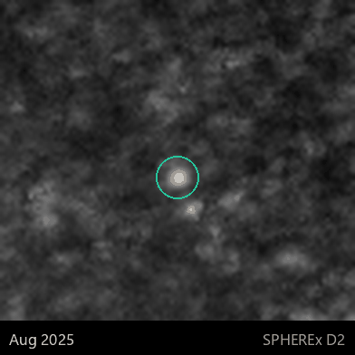

Kometa międzygwiazdowa
3I/ATLAS
Kometa z innej gwiazdy: trzecie ciało, które zobaczono, gdy przelatywało przez Układ Słoneczny, przybywając z zewnątrz. SPHEREx uchwycił ją w sierpniu 2025 roku, gdy się zbliżała, i ponownie w grudniu 2025 roku, sześć tygodni po jej przejściu obok Słońca.

Zgłosił ją 1 lipca 2025 roku teleskop przeglądowy ATLAS w Río Hurtado w Chile. Leci zbyt szybko, by Słońce mogło ją zatrzymać; stąd astronomowie wiedzą, że przybyła z zewnątrz: to trzecie takie ciało, jakie znaleziono, po ʻOumuamua i Borisovie. Najbliżej Słońca była 29 października 2025, w odległości 1,36 razy większej niż odległość Ziemi od Słońca, a najbliżej Ziemi 19 grudnia 2025, w odległości 1,8 razy większej niż tamta. SPHEREx miał ją w polu widzenia dwa razy: gdy się zbliżała (1–15 sierpnia 2025) i gdy się oddalała (8–15 grudnia 2025).
Na co patrzeć
Każdy obraz jest wyśrodkowany na komecie, więc zostaje ona pośrodku, a gwiazdy za nią się zmieniają. W sierpniu to słaby punkt; w grudniu jest ponad dwadzieścia razy jaśniejsza i ma warkocz. W widmie pod obrazami punkty, które w pobliżu 4,3 mikrona leżą wysoko nad resztą, to gazowy dwutlenek węgla świecący wokół komety. W grudniu świecą też para wodna (2,7 mikrona) i tlenek węgla (4,7 mikrona).
Co pokazują ekspozycje
Gaz wokół komety pochłania światło Słońca i oddaje je we własnych długościach fali. Tabela mówi, ile razy kometa jest jaśniejsza w paśmie każdego gazu niż w gładkim widmie obok. Wynik jest liczony z samych ekspozycji, kodem, który ta strona uruchamia po otwarciu komety.
| Gaz | Pasmo (µm) | sierpień 2025 | grudzień 2025 |
|---|---|---|---|
| Para wodna H₂O | 2,60–2,76 | brak wyraźnego świecenia | ×3,6 |
| Cząsteczki organiczne C–H | 3,25–3,55 | brak wyraźnego świecenia | ×2,7 |
| Dwutlenek węgla CO₂ | 4,20–4,33 | ponad ×100 | ×49 |
| Tlenek węgla CO | 4,58–4,80 | brak wyraźnego świecenia | ×3,1 |
Zespół SPHEREx, po znacznie staranniejszej analizie tych samych ekspozycji, opisuje dwutlenek węgla i parę wodną w sierpniu, a w grudniu kometę dużo aktywniejszą niż wcześniej, z parą wodną, cząsteczkami organicznymi, dwutlenkiem węgla i tlenkiem węgla, a także cyjankiem (CN).
Czy to na pewno kometa?
Każda ekspozycja jest wycięta wokół miejsca, które JPL Horizons (NASA) podaje dla komety na środek tej ekspozycji, widzianego stamtąd, gdzie w tej chwili był satelita. W 38 grudniowych ekspozycjach, w których kometa jest jasna, jej światło leży zwykle 0,3 sekundy łuku od tego miejsca, w najgorszym razie 0,5; jeden piksel SPHEREx to 6,15 sekundy łuku. IRSA, archiwum przechowujące zdjęcia SPHEREx, publikuje własną listę ekspozycji zawierających kometę: z jej 259 ta strona ma 258 i sześć dodatkowych (porównano 21 listopada 2026 roku).
SPHEREx ma 264 jej ekspozycji: 160 (1–15 sierpnia 2025) i 104 (8–15 grudnia 2025).
Otwórz w Chronosphere: 3I/ATLAS
Źródła: IRSA: SPHEREx observations of Comet 3I/ATLAS · NASA: Quick Facts about 3I/ATLAS · JPL Horizons · Lisse et al., arXiv:2512.07318 · Lisse et al., arXiv:2601.06759 · Wikipedia